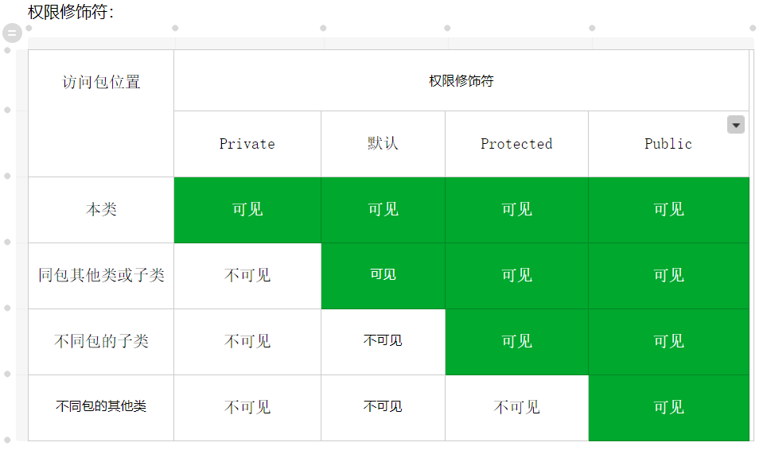

Java基础程序与面向对象原文出处:本文由博客园博主唐古拉山之子提供。
原文连接:https://www.cnblogs.com/Tanggula-pioneer/p/11731895.html
首先，我们需要了解和知道一些Java的基本概念：
程序编译过程：.java文件会通过编译器--被编译成一个. class字节码文件---再由虚拟机运行.class文件解释运行Java程序。
编码规范：可以考虑遵循阿里巴巴的开发手册。
类：作为一个加载程序逻辑的容器，程序逻辑定义了应用程序的行为。Java程序的基本单位
包：确保类名的唯一性。
其次了解编程的基础：
控制程序流程：
选择结构语句：
if语句：if(boolean表达式){ 语句1：真语句 }else{ 语句2：假语句 }
switch语句：switch（某个值）
case 值：语句体； break；
case 值： 语句体；break；
default 值 ： 语句体；break；
Case值可以为：char、byte、short、int、String、枚举常量等
循环语句结构：
for(语句一；语句二；语句四){语句三}
while(boolean表达式){循环体}
do(boolean表达式)while(循环体)
增强foreach循环：
格式：for(元素数据类型变量x : 数组或者collection集合）{
使用变量即可，该变量就是元素;
}
// 区别：for循环结束即注销/while循环结束可调用值作统计。
break 中断循环
continue 跳过本次循环
return 返回值 结束方法，后面内容不编译//返回负数，值不存在
运算符：算术运算符：+ ，-， *， /， %，++(自增+1)， --(自减-1)
-------字符+整型，先用ASCII码表算出字符在表中对应的整型，再相加，输出整型值。
赋值运算符： = 、+= 、-= 、*= 、/= 、%=
关系运算符：：>、<、>=、<=、==、!=
逻辑运算符：! 、&、|、^、&&、||
单&时，左边无论真假，右边都进行运算 双&&有短路效果，当左边FALSE时，中断，右边不判断。
&逻辑与：有false则false // | 逻辑或：有true则true // ^ 逻辑异或：相同为false，不同为true。
位运算符：&("and")、|("or")、^("xor")、~("not")、>>、<<、>>> ---------------位运算，先把数据转换为二进制。
了解Java的数据类型
数据类型：4类8种【java语言强类型语言，定义分配了大小存取空间】
基本型 整型【byte、short、int[默认值]、long】 1字节 2字节 4字节 8字节 且byte类型的取值范围在 -128~127
Java中整型的范围与运行Java代码的机器无关，且解决了程序移植问题。-------在C和C++中int和Long类型的大小与目标平台相关。
十六进制前缀加0x或者0X、二进制前加0b或者0B。
浮点型【double[默认值]、float】 8字节 4字节 ------单精度浮点数加F/f
浮点数值不适合用于无法接受舍入误差的金融计算中，即System.out.printf(2.0-1.1)结果为0.8999999.
原因是：浮点数值采用二进制系统表示。而二进制系统无法准确的表示分数的1/10,就好比十进制无法精确的表示1/3---推荐使用BigDecimal类
当整型和浮点型不能满足需求时，java.math包中提供了BigInteger 提供任意精度的整数运算-----BigDecimal 提供任意精度的浮点数运算。
这两个类可以处理任意长度数字序列的数值。使用静态方法ValueOf()方法能将普通数值转换为大数值，且不能用运算符处理大数据，有具体方法。
字符型【char】 2字节 --------表示Unicode编码的字符单元的字符类型
布尔型【boolean】 1字节 两个值 FALSE 和 TRUE
变量的类型转换： 自动转换：{byte，short，char-int-long-float-double 从小到大转换}
{byte,short,char相互不转换，参与运算符首先转换为int类型} ----- boolean不参加转换
强制转换：{【二者不兼容】【目标类型范围小于源类型】} --------大转小--损失精度
格式：目标类型 变量名=(目标类型) 值 -----后期Object类型转换用得多
变量类型默认值： 引用类型的变量是默认值为 null ， 数组引用类型的变量的默认值为 null，局部变量没有默认值，需手动初始化。
引用型 ：类【class】、接口【interface】、数组、枚举【enum】、注解【annotation】
String类型：不可变字符串，Unicode字符序列，Java没有内置的字符串类型，而是在标准的Java类库中提供了一个预定义类--String，用双引号扩起来。
字符串存在于方法区的常量池中，所有字符串共享
而当使用+运算符时，每创建一个新的字符串对象。
==只能比较字符串所在的位置是否相同，而equals比较两个字符串常量的值是否相等。
StringBuffer类：为了解决大量拼接字符串时产生很多中间对象问题而提供的一个类，效率低，但采用多线程的方式执行添加和删除字符操作。
StringBuilder类：作用相同，效率高。
Java中引入字符常量池概念：即创建一个字符串时，首先会检查池中是否有值相同的字符串对象，如果有就直接返回引用，不会创建字符串对象；
如果没有则新建字符串对象，返回对象引用，并且将新创建的对象放入池中。但是，通过new方法创建的String对象是不检查字符串常量池的，而是直接在堆中创建新对象，也不会把对象放入池中。
数组：一种数据结构，用来存储同一类型值的集合。初始化值为0或者null。
多维数组：就是一维数组的组合。 arr[行][列]。 数据类型[][] 数组名 = new 数据类型[][]{{元素...}{元素...}}；
数组遍历：【依次访问数组中的每个元素】
数组排序：冒泡排序 //逆序、最值、排序、查索引值
类(class):由类构造(construct)对象的过程称为创建类的实例(instance)。
对象中的的数据称为实例域--属性，
操作数据的过程称为方法---行为。
对象的状态--对象保存着的当前特征信息--当施加那些方式时，对象如何响应？
类之间的关系：
依赖：("uses-a")：一个类的方法操控另一个类的对象。
聚合：("has-a")：类A的对象包含类B的对象。
继承：("is-a")：儿子与爸爸的关系--财产继承。
构造器：【方法名和类名相同】
【方法名前面没有返回值类型的声明】
【在方法中不能使用return语句返回一个值】
【this(....)调用本类的构造方法/super(.....)调用父类的构造方法 //必须出现在第一条语句上】
【构造方法的重载，通常用public来修饰】
方法：修饰符 返回值类型 方法名(参数类型 参数名1....){ 方法体语句；return 返回值；}
方法的重写：子类中出现和父类方法中一模一样的方法声明，也叫方法覆盖。//当子类需要父类的功能也要有自己的特有功能，可以考虑重写，权限不能低。
方法的重载：一个程序中定义多个名称相同的方法，但是参数的类型和个数/顺序必须不同。与返回值无关。
方法的递归：一个方法的内部调用自身的过程，且必须有结束条件。

This关键字：代表本类中的对象引用，在方法中访问对象的其他成员。
在使用this调用类的构造方法应注意
【只能在构造方法中使用this调用其他构造方法，不能在成员方法中使用。】
【在构造方法中。使用this调用构造方法语句必须位于第一行，只能出现一次】
【不能在一个类的两个构造方法中使用this互相调用】
super关键字：代表父类的对象引用，用于访问父类的成员。
【使用关键字super调用父类的成员变量和成员方法】super.成员变量/super.成员方法(参数)
【使用关键字调用父类的构造方法】super(参数)；
Static关键字【状态修饰符】
Static关键字修饰类的成员。//类名.静态名
静态变量：静态变量被所有实例共享，都可以通过“类名.变量名”来访问。
静态方法：可以通过“类名.方法名”来访问。【静态方法只能访问static修饰的成员变量和方法】
静态代码块：只执行一次，通常使用静态代码块对类的成员变量初始化。
Final关键字【状态修饰符】
修饰类、变量、方法。
【修饰的类不能被继承，不能派生子类】
【修饰的方法不能被子类重写，】
【修饰的变量是常量(自定义常量/字面值常量)】
继承：【格式：子类extends父类】
【单继承：一个类只能有一个直接父类】
【多个类可以继承一个父类】
【多层继承，继承爷爷类】
【让类与类产生关系，是多态的前提】
【弊端：类之间的耦合性增强】
继承的注意事项 : 【子类中所有的构造方法都会默认先访问父类中无参的构造方法】
【父类没有无参构造方法？a.子类通过super去明确调用带参构造，b.通过this调用本身其他构造，但有一个一定会访问父类构造】
【子类构造方法的首句默认为super();】
【子类不能继承父类的构造方法，可以通过super关键字访问父类构造方法】
【子类权限不能大于父类，成员变量名相同，采用就近原则】
【子类只能继承父类所有非私有的的成员(成员变量和成员方法)】
【重写父类方法：具有相同的方法名、参数列表以及返回值类型。】
【子类调用父子类同名的方法或变量，默认先调用子类的方法或变量】
多态: 同一个对象在不同时刻体现出来的不同状态。
前提：【要有继承或实现关系】
【要有方法重写】
【要有父类或父类接口引用指向子类对象 //父类 标识符 = new 子类()】
具体类多态【class Fu{ } class Zi extends Fu{ } Fu f = new Zi()】
抽象类多态【abstract class Fu{ } class Zi extends Fu{ } Fu f = new Zi()】
接口类多态【interface Fu{ } class Zi implementsFu{ } Fu f = new Zi()】
多态中成员访问特点【成员变量 编译看左边 ， 运行看左边】
【构造方法 子类的构造方法都会默认访问父类的构造方法，对父类数据进行初始化】
【成员方法 编译看左边 ， 运行看右边//方法存在覆盖重写】
【静态方法 编译看左边 ， 运行看左边//静态随类加载，不做改变】
对象中转型问题[多态中]
【向下转型】把父类的引用强制转换为子类的引用。子类 z = (子类) f ;//该f 是能转换为子类的
【向上转型】F类 f = new 子类();
同一个方法中，这种由于参数型不同的而导致执行效果各异。
允许使用一个父类类型的变量来引用一个子类类型的对象。
抽象:用abstract关键字修饰，把不具有具体的功能成为抽象的功能。
抽象方法：【格式：public abstract void 方法名()】定义方法时没有方法体，不包含方法体的方法为抽象方法，】
抽象类：【格式： abstract class 类名()】包含抽象方法的类必须声明抽象类，但抽象类可以不包含抽象方法。】
【抽象类不可以被实例化，抽象方法没有方法体则不能被调用】
抽象类的子类：
【重写所有的抽象方法，这个时候子类是个具体的类】
【如果不想重写所有的抽象方法，该子类必须为抽象类】
【通过多态的方式实现实例化】
以上内容若有错误，大家多多指正。